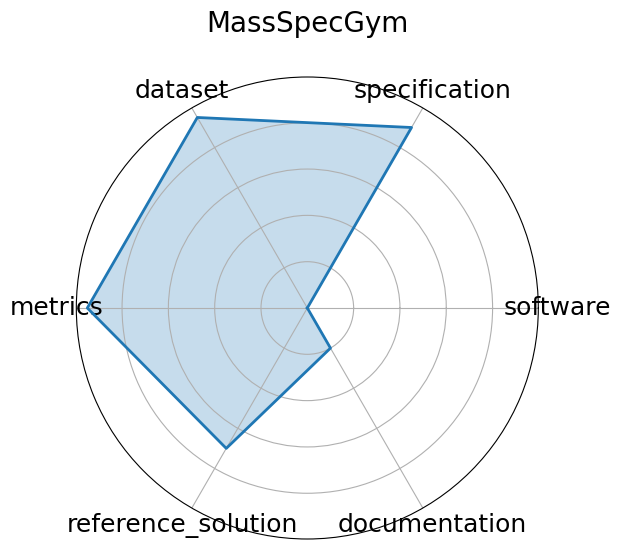

Date: 2024-12-13
Name: MassSpecGym
Domain: Cheminformatics; Molecular Discovery
Focus: Benchmark suite for discovery and identification of molecules via MS/MS
Keywords: mass spectrometry, molecular structure, de novo generation, retrieval, dataset
Task Types: De novo generation, Retrieval, Simulation
Metrics: Structure accuracy, Retrieval precision, Simulation MSE
Models: Graph-based generative models, Retrieval baselines
Citation:
Roman Bushuiev, Anton Bushuiev, Niek F. de Jonge, Adamo Young, Fleming Kretschmer, Raman Samusevich, Janne Heirman, Fei Wang, Luke Zhang, Kai Dührkop, Marcus Ludwig, Nils A. Haupt, Apurva Kalia, Corinna Brungs, Robin Schmid, Russell Greiner, Bo Wang, David S. Wishart, Li-Ping Liu, Juho Rousu, Wout Bittremieux, Hannes Rost, Tytus D. Mak, Soha Hassoun, Florian Huber, Justin J.J. van der Hooft, Michael A. Stravs, Sebastian Böcker, Josef Sivic, and Tomáš Pluskal. Massspecgym: a benchmark for the discovery and identification of molecules. In A. Globerson, L. Mackey, D. Belgrave, A. Fan, U. Paquet, J. Tomczak, and C. Zhang, editors, Advances in Neural Information Processing Systems, volume 37, 110010–110027. Curran Associates, Inc., 2024. URL: https://proceedings.neurips.cc/paper_files/paper/2024/file/c6c31413d5c53b7d1c343c1498734b0f-Paper-Datasets_and_Benchmarks_Track.pdf.
bibtex: ``` @inproceedings{neurips2024_c6c31413,
author = {Bushuiev, Roman and Bushuiev, Anton and de Jonge, Niek F. and Young, Adamo and Kretschmer, Fleming and Samusevich, Raman and Heirman, Janne and Wang, Fei and Zhang, Luke and D\"{u}hrkop, Kai and Ludwig, Marcus and Haupt, Nils A. and Kalia, Apurva and Brungs, Corinna and Schmid, Robin and Greiner, Russell and Wang, Bo and Wishart, David S. and Liu, Li-Ping and Rousu, Juho and Bittremieux, Wout and Rost, Hannes and Mak, Tytus D. and Hassoun, Soha and Huber, Florian and van der Hooft, Justin J.J. and Stravs, Michael A. and B\"{o}cker, Sebastian and Sivic, Josef and Pluskal, Tom\'{a}\v{s}},
booktitle = {Advances in Neural Information Processing Systems},
editor = {A. Globerson and L. Mackey and D. Belgrave and A. Fan and U. Paquet and J. Tomczak and C. Zhang},
pages = {110010--110027},
publisher = {Curran Associates, Inc.},
title = {MassSpecGym: A benchmark for the discovery and identification of molecules},
url = {https://proceedings.neurips.cc/paper_files/paper/2024/file/c6c31413d5c53b7d1c343c1498734b0f-Paper-Datasets_and_Benchmarks_Track.pdf},
volume = {37},
year = {2024}}
```
Ratings:
Software:
Rating: 3
Reason: Open-source GitHub repository available; baseline models and training code partially provided but overall framework maturity is moderate.
Specification:
Rating: 5
Reason: Clearly defined tasks including molecule generation, retrieval, and spectrum simulation, scoped for MS/MS molecular identification.
Dataset:
Rating: 5
Reason: Largest public MS/MS dataset with extensive annotations; minor point deducted for lack of explicit train/validation/test splits.
Metrics:
Rating: 5
Reason: Well-defined metrics such as structure accuracy, retrieval precision, and simulation MSE used consistently.
Reference Solution:
Rating: 3.5
Reason: CNN-based baselines are referenced, but pretrained weights and comprehensive training pipelines are not fully documented.
Documentation:
Rating: 1
Reason: Paper and poster describe benchmark goals and design, but documentation and user guides are minimal and repo status uncertain.
Average Rating: 3.75
Radar Plot: 